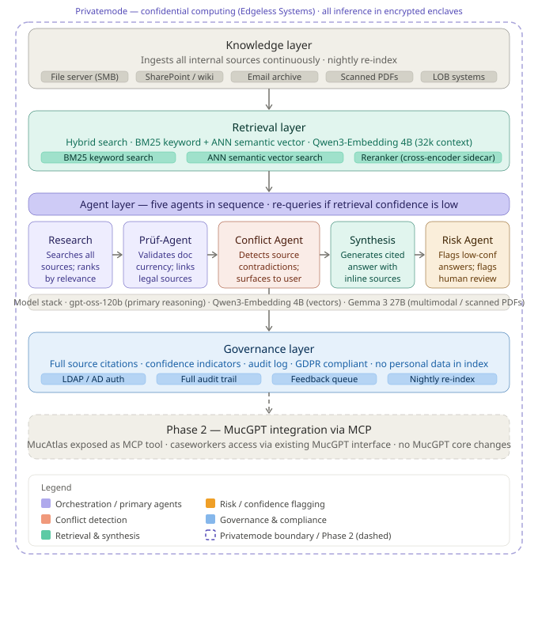

Public Sector · Knowledge Management
MucAtlas: a knowledge assistant for city staff
A design for helping Munich’s caseworkers find reliable answers fast, while keeping citizens’ data under the city’s control. Entry to the Munich Innovation Challenge 2026.
Architecture and design, competition entry
01The problem
City caseworkers spend a lot of time hunting for answers. The information is spread across many internal sources, and it is often unclear which version is current. A rule that changed last month may still sit in an old document, and two sources can quietly contradict each other.
02What it does
MucAtlas connects those sources and answers a caseworker’s question in seconds, with a reference for every point. Before it answers, it checks whether the legal documents it relies on are still in force, and it warns when two sources disagree.
03How it works
Five agents each do one job: one searches the sources, one checks that documents are still valid, one looks for contradictions, one writes the answer, and one assesses the risk of getting it wrong. Everything runs in a protected computing environment where even the hosting provider cannot see the data. For a public authority, that matters as much as the answers themselves.
04Where it stands
This is an architecture and design, submitted as a competition entry. It has not been built as a working system. The diagram below shows how the parts fit together.

Built with
Want the technical detail?
The code and the full technical write up are on GitHub.